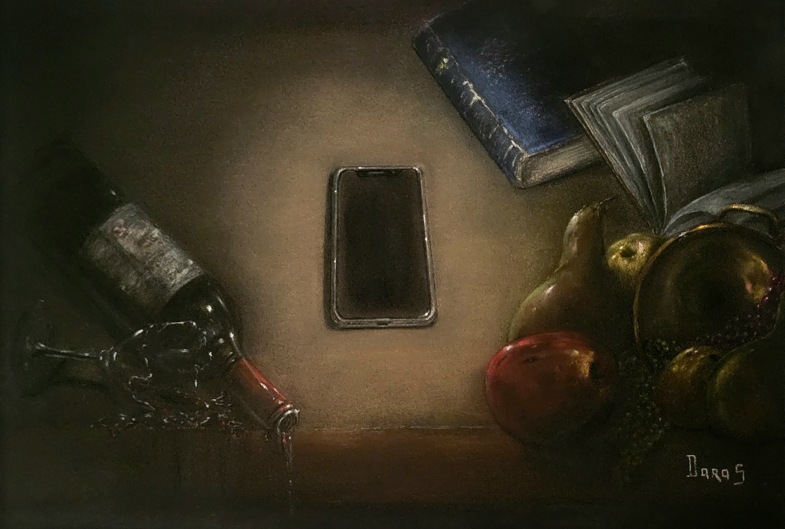

Vibrations
Triptyque : Le Silence des ondes
Premier volet du triptyque Le silence des ondes, le cadre, présenté en légère inclinaison lors des expositions, laisse le vin s'écouler hors du tableau jusqu'à maculer le passe-partout. Les objets, habituellement paisibles dans une nature morte, semblent renversés par une force invisible. Au centre, le téléphone demeure impassible, presque souverain. Je m'interroge sur l'impact que peuvent avoir des interruptions intempestives dans des instants qui se veulent sereins. Que disent-elles du caractère immuable — ou fragile — des choses ? Une question intrigante pour une nature morte… ou still life.
Demander des informations →← Retour à la galerie